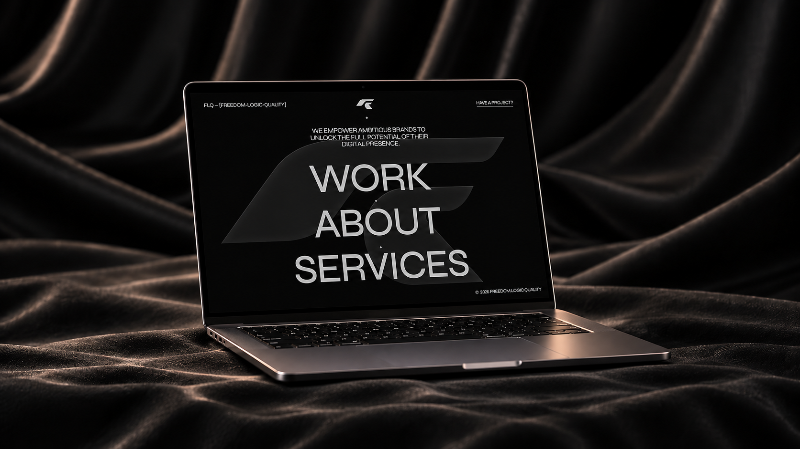

01 / Founder · Creative direction · Development
FLQ
Visit FLQ website ↗FLQ is my business startup, created and developed entirely by me. I have been building it since early 2026, shaping every part of the concept, identity, interface and code.

Freedom.
Logic. Quality.
I spent a long time developing a visual language that feels bold, provocative and emotional. The goal is to help Moldovan businesses create a strong impression not only offline, but through every part of their online presence.
Built entirely by me
I developed the business idea, brand direction, interface, interaction system and code as one connected product. The prototype uses React, Vite and Tailwind CSS on the frontend, with Node.js, Express, MySQL and JWT authentication on the backend. It is nearly finished and will be completed soon.